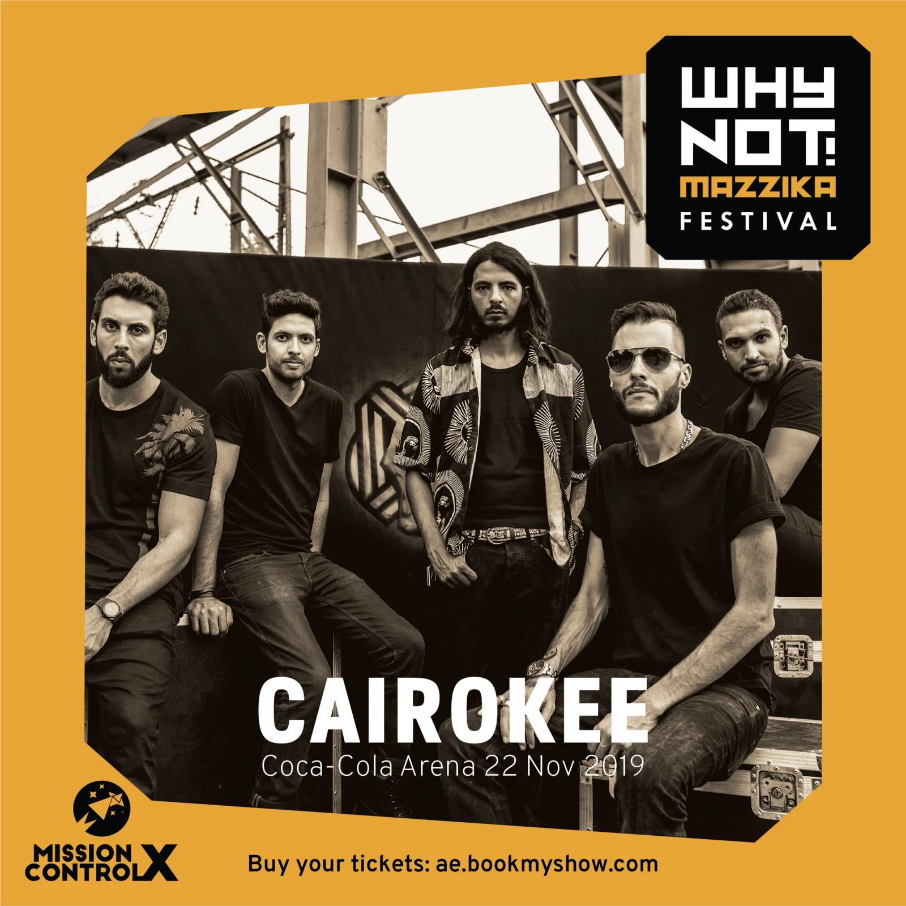
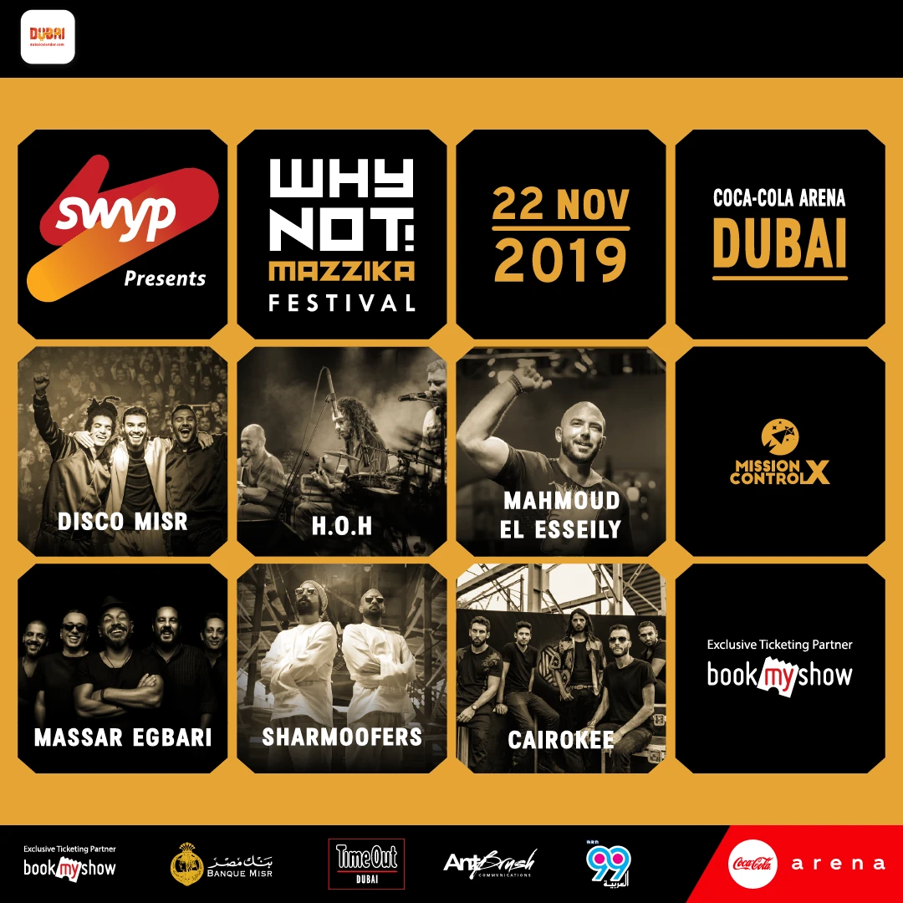
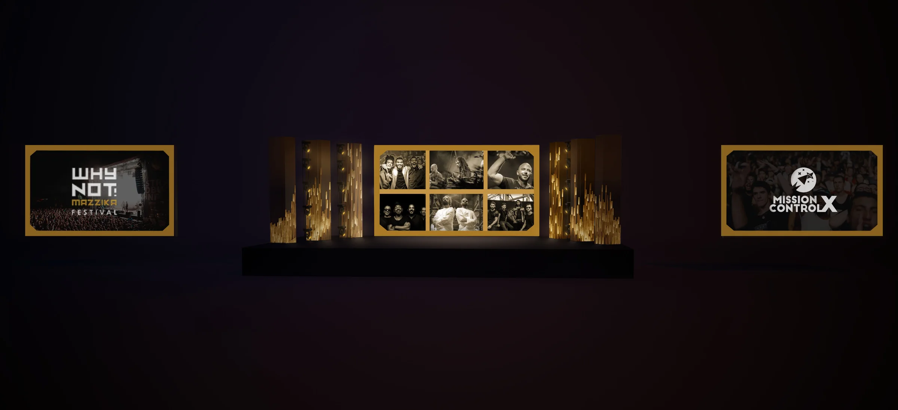

Why Not! Mazzika
Six acts, one night, one arena.Why Not! Mazzika Festival. Coca-Cola Arena, Dubai, 22 November 2019.Executive Creative Director: Antoni Gerges · AntBrush, with Mission Control X
Six Egyptian acts, one night at the Coca-Cola Arena. I was the festival’s creative director: its design, its setup and its branding inside the arena, and at front of house on the night.
First, on paper.
One frame for everything: a black square with its corners cut, on gold. Every act steps into it. Six of them make the key visual. Then the same frame goes onto the stage.



Then the arena,
in 3D.
What goes where, what the audience meets first, what every screen carries. The hall is drawn from our seating plan; the stage, screens, light and sound from the films of the night. After each model, the real thing.
What goes where
An end stage. In front of it the floor, in two standing zones. Seats along both long sides. Front of house in the middle of the floor, and a bar at the far end.
The stage
Six acts share one stage in one night. One wide deck at the short end of the hall, wings left and right, a barrier in front. Over it, a grid flown from the roof. I directed the stage design; Studio One drew the mock-ups.
The LED system
One centre screen for each band’s pictures and the festival’s. Six pillars beside it, three a side, that run with it as one picture. Two side screens, flown high, for the live camera.
The light
Five rows of truss over the stage carry the moving lights, with short rows at the sides and more on the floor. Enough to give each of six acts a different room.
The sound
Two hangs flown left and right, between the stage and the side screens, and monitors along the front for the bands. The films show no more of the system than that.
Front of house
The sound, light and video desks sat together on one riser in the middle of the floor, with the bands’ own operators. I worked from there on the night.
Every screen, one frame
Each side screen puts the live camera inside the same cut-corner frame as every poster.The festival’s ten-second clips also went to the arena’s own screens, outdoors and indoors. I have no picture of those.
Full house
The same hall, from front of house, that night.
Lights.
One rig, a different room for every act.Festival film · Mission Control X
Stage.
Six acts, one after another, from six in the evening.Festival film · Mission Control X
Full.
The hall, lit by its own phones. Then the film of it all.Festival film · Mission Control X
Executive Creative Director
Creative direction of the festival: the frame system, the campaign artwork, the seating plan, the stage design direction, the screen films and the screen sizes. Front of house on the night.